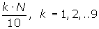
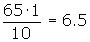
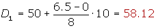
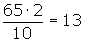
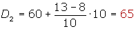
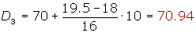
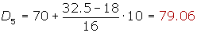
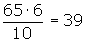

Deciles
Deciles
Los deciles son los nueve valores que dividen la serie de datos en diez partes iguales.
Los deciles dan los valores correspondientes al 10%, al 20%... y al 90% de los datos.
D5 coincide con la mediana.
Cálculo de los deciles
En primer lugar buscamos la clase donde se encuentra , en la tabla de las frecuencias acumuladas.

Li es el límite inferior de la clase donde se encuentra el decil.
N es la suma de las frecuencias absolutas.
Fi-1 es la frecuencia acumulada anterior a la clase el decil..
ai es la amplitud de la clase.
Ejercicio de deciles
Calcular los deciles de la distribución de la tabla:
| fi | Fi | |
|---|---|---|
| [50, 60) | 8 | 8 |
| [60, 70) | 10 | 18 |
| [70, 80) | 16 | 34 |
| [80, 90) | 14 | 48 |
| [90, 100) | 10 | 58 |
| [100, 110) | 5 | 63 |
| [110, 120) | 2 | 65 |
| 65 |
Cálculo del primer decil


Cálculo del segundo decil


Cálculo del tercer decil


Cálculo del cuarto decil


Cálculo del quinto decil


Cálculo del sexto decil


Cálculo del séptimo decil


Cálculo del octavo decil


Cálculo del noveno decil